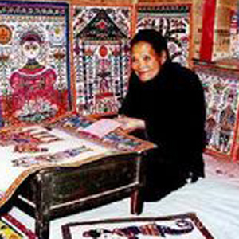
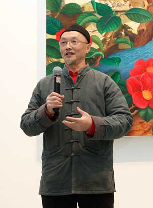

纸艺的传承，靠的是一双手接一双手。这些创作者有的生活在陕北窑洞，有的任教于美院课堂，却同样认真地对待每一张纸。
名录里的人物，有的擅长一把剪刀剪出十里红妆，有的把民间纹样带入当代艺术语境。他们不是遥远的传说，而是你可以读懂、可以走近的创作者。

民间剪纸艺术大师
以色彩绚丽、构图饱满的彩贴剪纸闻名，推动民间剪纸从节庆装饰走向更完整的艺术表达。
蔚县剪纸代表人物
将戏曲人物、花鸟走兽等题材纳入剪纸语言，奠定蔚县阴刻与点彩并重的地域风格基础。

当代剪纸艺术家
把民间剪纸语汇带入当代艺术语境，使传统纸艺进入新的展览、研究和公共传播空间。
扬州剪纸传承人
以线条清秀、构图雅致著称，系统整理扬州剪纸的技法体系，影响了后续传承与教学。
知道了库淑兰的繁密、王老赏的戏曲、吕胜中的小红人，再去看那些作品，你会看见更多。